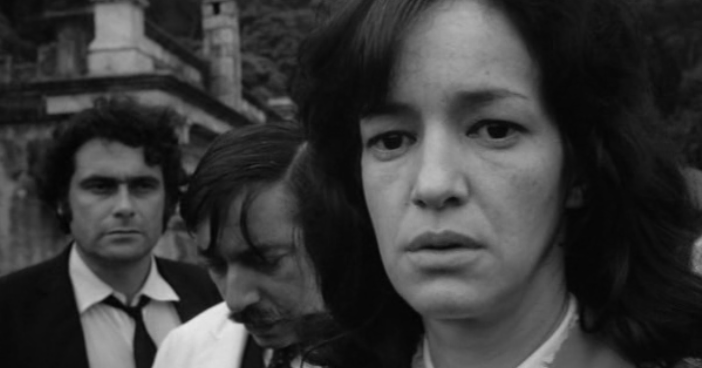

Alrededor de todo el mundo ha habido corrientes representativas de cada país, las condiciones históricas, económicas y sociales son la base de lo que se plantea en las distintas olas del cine. El analizar cada corriente podemos entender las distintas fases que ha atravesado el mundo, cada conflicto, y la forma por la que por medio del arte, las personas transgreden y se rebelan; la foto, el sonido, las historias, y la forma de contarlas están en constante cambio, como los seres humanos. Conocer y entender las corrientes nos abre la perspectiva, y nos permite entender que al final todos estamos conectados al ser humanos.